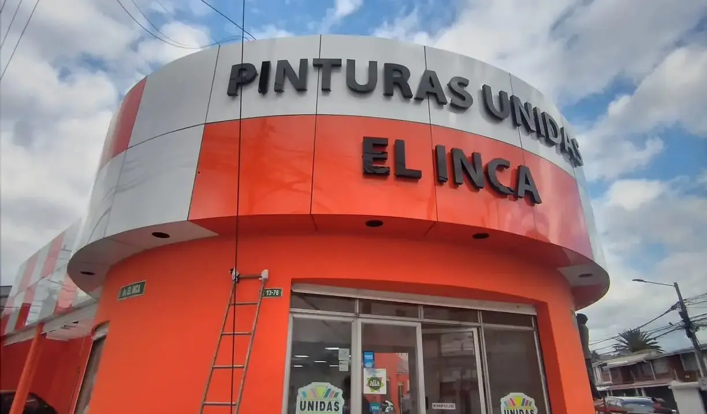
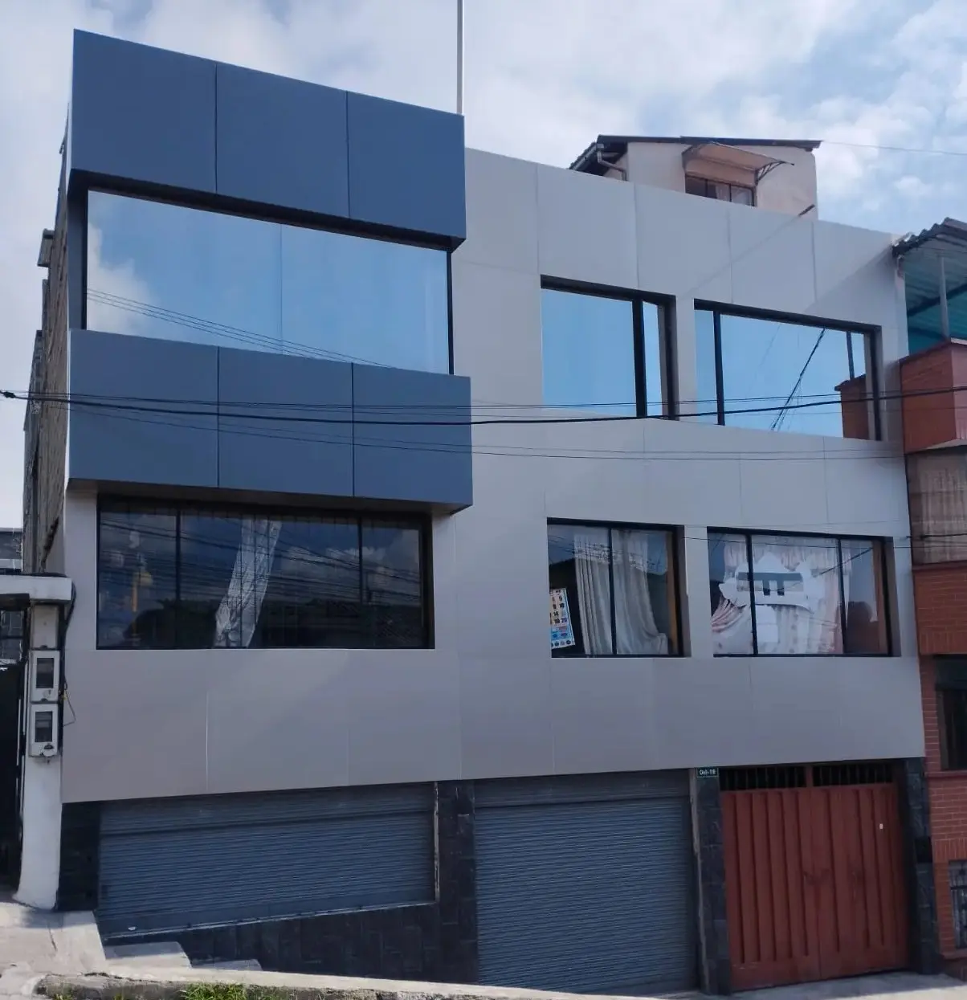
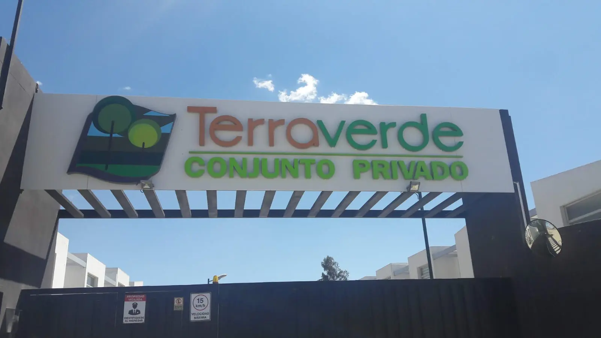
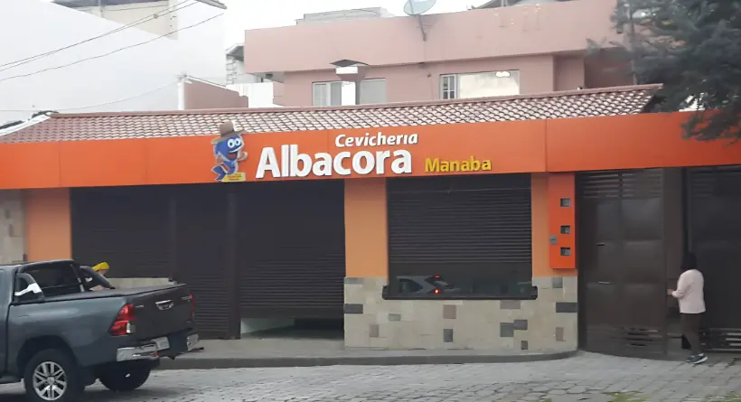
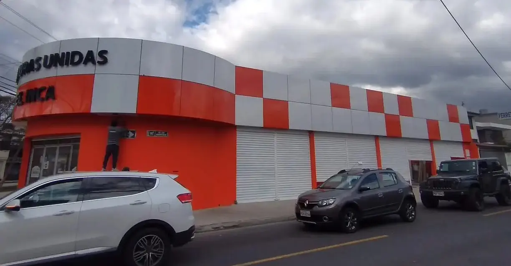

Alucobond en Quito: Fachadas y Revestimientos de Aluminio
Instalamos fachadas y revestimientos de Alucobond en Quito y los valles: paneles de aluminio compuesto para el frente de un local, para revestir un edificio o para darle a una casa una fachada moderna y pareja. Taller propio en Quito y 22 años de oficio en trabajo con aluminio y estructura metálica.
El Alucobond es liviano, no se oxida como la lámina de acero y da un acabado limpio en muchos colores. Lo que hace que una fachada dure es la instalación: la estructura de soporte, los anclajes y el sellado de las juntas. Medimos la fachada en obra sin costo y con esa medida entregamos la cotización.
Fachadas de Alucobond que hemos instalado

Fachada de Alucobond en local comercial · Ref. N1

Fachada de Alucobond en edificio · Ref. N2

Revestimiento de Alucobond en conjunto residencial · Ref. N3

Rótulo y fachada de Alucobond en local · Ref. N4

Fachada de Alucobond en establecimiento comercial · Ref. N5
El Alucobond es el nombre más conocido de los paneles de aluminio compuesto que se usan para revestir fachadas. En Quito se ve sobre todo en frentes de locales comerciales, en rótulos y en fachadas de edificios, y cada vez más en viviendas que quieren un frente moderno o cubrir una pared en mal estado. Viene en muchos colores y acabados, mate o brillante, y una vez instalado da una superficie pareja y limpia que la lámina de acero pintada no consigue.
Nosotros hacemos la instalación completa: la estructura de soporte anclada a la pared, el montaje de los paneles y el sellado de las juntas. Ese trabajo es el que decide si la fachada aguanta el sol y la lluvia de Quito por años o se despega en la primera temporada. Medimos en obra sin costo antes de cotizar.
Propiedades y Composición del Aluminio Compuesto Alucobond
Las características del aluminio compuesto Alucobond lo convierten en un material destacado en la arquitectura contemporánea. Su diseño único permite una versatilidad que se adapta a diversas aplicaciones.
Estructura y Materiales Utilizados
Este material está compuesto por dos láminas de aluminio que encierran un núcleo de polietileno. Esta estructura proporciona una combinación ideal de ligereza y resistencia, permitiendo su utilización en diferentes tipos de construcciones.
Ligereza Excepcional
Facilita su manipulación y transporte, reduciendo costos en mano de obra y permitiendo instalaciones más eficientes.
Alta Resistencia
Protección contra impactos y deformaciones, aumentando significativamente la durabilidad del material en condiciones adversas.
Estabilidad Climática
Resistencia excepcional a variaciones de temperatura, humedad y exposición solar, evitando decoloraciones y deterioro.
Aplicaciones Arquitectónicas del Alucobond
Este material versátil se utiliza en una variedad de aplicaciones arquitectónicas, aportando tanto funcionalidad como estética a los proyectos. Su adaptabilidad lo convierte en una elección preferida en el diseño moderno.
Fachadas Ventiladas
Sistemas que permiten circulación de aire, mejorando la eficiencia energética
Fachadas Metálicas
Acabados contemporáneos con alta durabilidad y bajo mantenimiento
Paredes Interiores
Acabados modernos y estéticamente agradables para espacios interiores
Fachadas de Balcones
Instalación ágil y segura aprovechando su resistencia y ligereza
Techos Termoacústicos
Aislamiento adecuado y control de ruido para mayor confort
Paneles Sandwich
Construcción rápida y eficiente para proyectos comerciales y residenciales
Comparativa con Otros Materiales
En comparación con el fibrocemento, Alucobond ofrece una mayor ligereza y estética, mientras que los policarbonatos, aunque son más flexibles, carecen de la misma durabilidad. Por otro lado, el porcelanato es común en interiores, pero el Alucobond se destaca en exteriores por su resistencia ambiental.
Selección de Alucobond Según Condiciones y Proyectos
La elección de Alucobond para proyectos arquitectónicos debe basarse en diversos factores que aseguren su eficacia y durabilidad en diversas condiciones.
Consideraciones Climáticas y Normativas
Es esencial identificar las características específicas del lugar de instalación, incluyendo temperaturas extremas, niveles de humedad y normativas locales de construcción que regulan el uso de materiales en fachadas.
Impermeabilización y Aislamiento Térmico
La impermeabilización es fundamental para proteger el interior del edificio de filtraciones. El aislamiento térmico puede optimizar el confort de los espacios interiores, reduciendo costos de energía y mejorando la eficiencia general.
Precios y Costos Asociados al Alucobond
Los precios del Alucobond y sus derivados pueden variar considerablemente debido a varios factores importantes a considerar al presupuestar un proyecto.
Factores que Influyen en el Precio
- Tipo de acabado: Los acabados personalizados o texturizados suelen ser más costosos
- Grosor del panel: Un mayor grosor garantiza mayor durabilidad, pero incrementa el costo
- Demanda del mercado: Fluctuaciones que pueden modificar el precio significativamente
- Costos de transporte: Dependiendo de la ubicación del proveedor
Consejos para Optimizar la Inversión
Para sacar el máximo provecho del presupuesto, es fundamental seleccionar el proveedor adecuado en función de la calidad y el costo, evaluar diferentes acabados y grosores según las necesidades específicas del proyecto, y considerar la compra a granel para obtener descuentos por volumen.
¿Listo para Transformar tu Proyecto con Alucobond?
Obtén una cotización personalizada para tu proyecto de fachada moderna. Nuestros expertos te asesorarán en la mejor opción para tus necesidades específicas.
SOLICITAR COTIZACIÓNPreguntas frecuentes sobre Alucobond
¿Qué es el Alucobond y para qué sirve en una fachada?
Es un panel de aluminio compuesto: dos láminas de aluminio con un núcleo interior. Se usa para revestir fachadas de locales, edificios y casas porque es liviano, resistente a la intemperie y da un acabado moderno y parejo. En Quito se coloca mucho en fachadas de negocios y en frentes de edificios.
¿Cuánto cuesta instalar Alucobond en Quito?
El precio se calcula por metro cuadrado y depende de la superficie total, el color y acabado del panel, la altura del edificio y el estado de la pared. No damos un precio cerrado sin ver la fachada: medimos en obra sin costo y con esa medida entregamos la cotización.
¿El Alucobond sirve para fachadas de casas o solo para locales y edificios?
Sirve para los tres. En locales comerciales se usa para el frente y el rótulo, en edificios para revestir plantas enteras, y en viviendas para dar un frente moderno o tapar una fachada en mal estado. La estructura de soporte se adapta a cada caso.
¿Cuánto dura y qué mantenimiento necesita una fachada de Alucobond?
Una fachada bien instalada dura años sin decolorarse porque el aluminio no se oxida como la lámina de acero. El mantenimiento es una limpieza normal. Lo que marca la diferencia es la instalación: la estructura, los anclajes y el sellado de juntas.
¿Trabajan Alucobond en Cumbayá, Tumbaco y los valles?
Sí. El taller está en Quito y cubrimos Quito y los valles: Cumbayá, Tumbaco, Calderón, Sangolquí y Nayón.
Otros servicios
Además de fachadas de Alucobond trabajamos estructuras metálicas, ventanas y cubreventanas y puertas metálicas. Si tu proyecto es una obra completa, escríbenos por contacto o directo por WhatsApp.